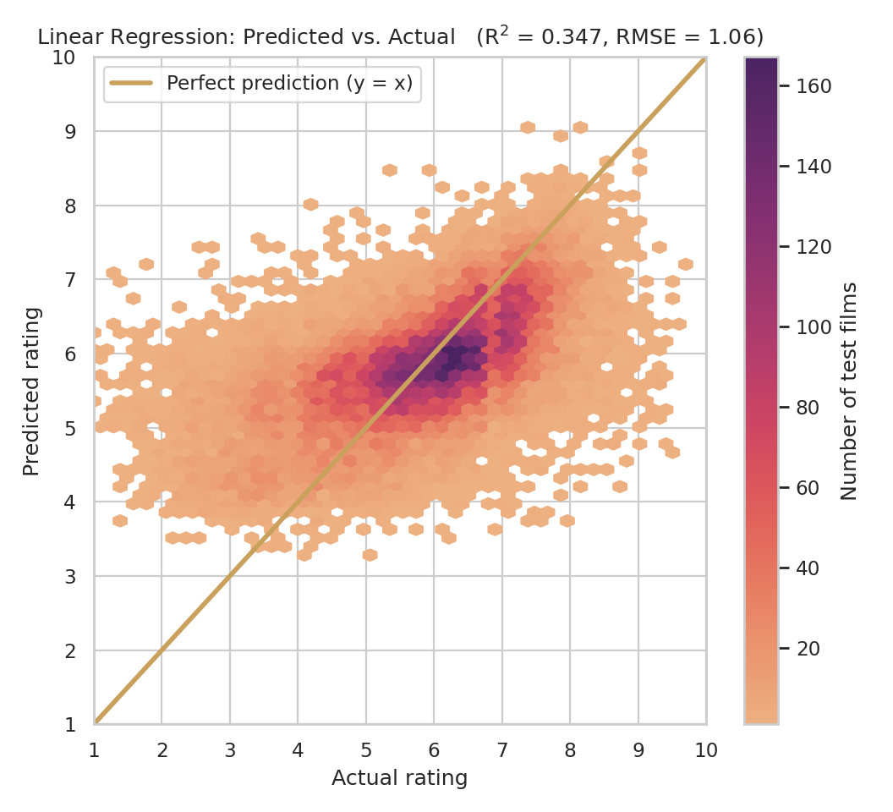
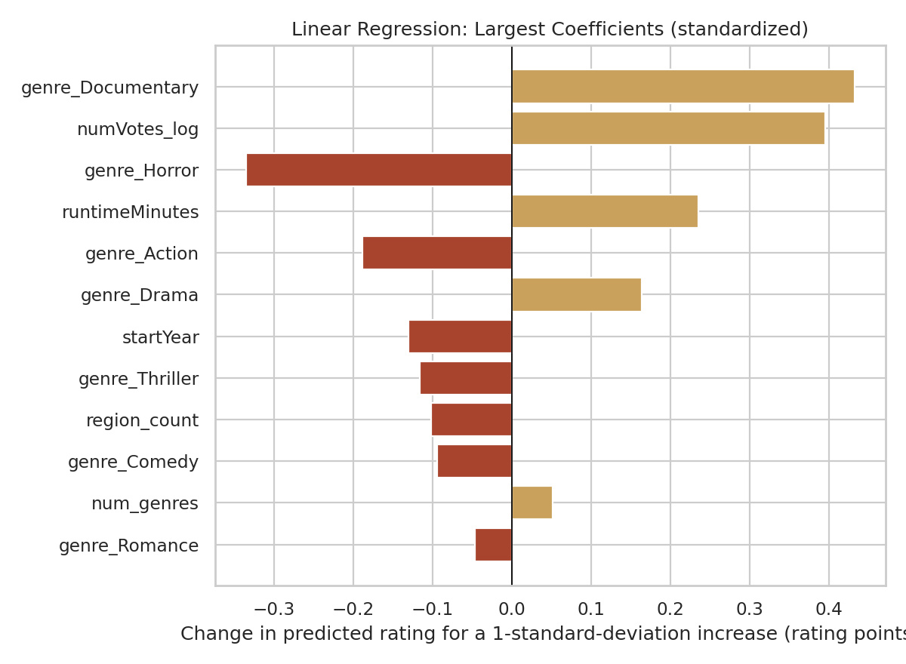
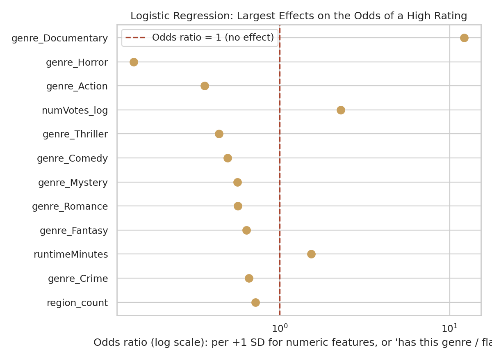
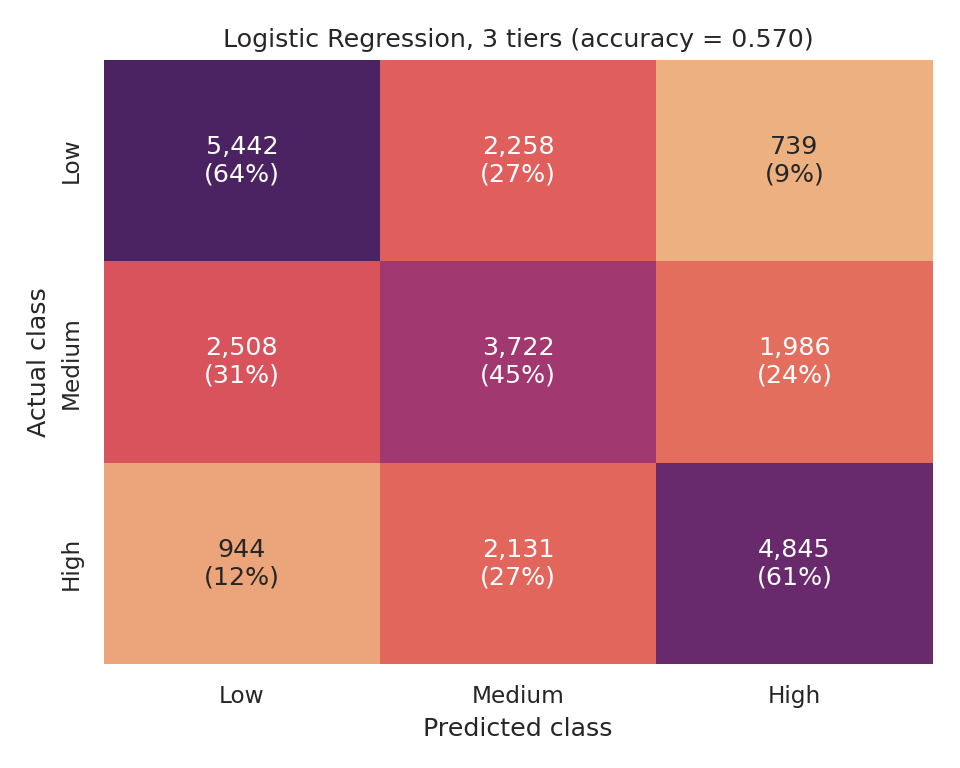

Section 07
Regression
Predicting a film's rating as a number with linear regression, and the chance of a High rating with logistic regression.
(a) Overview
Linear regression: predicting a number
Linear regression predicts a numeric target. It models the target as a weighted sum of the input features plus a constant:
predicted value = b0 + b1 × (feature 1) + b2 × (feature 2) + … + bn × (feature n)The weights, called coefficients, are chosen by least squares: the line (or, with many features, the flat surface) that makes the total of the squared gaps between predicted and actual values as small as possible. Those gaps are the residuals, drawn in red below. Each coefficient states how much the prediction changes when that feature rises by one unit while the others are held fixed, which is what makes the model easy to explain. Its quality is judged with three numbers: RMSE (the typical size of an error, in the units of the target), MAE (the average absolute error), and R² (the share of the variation in the target that the model explains, where 0 means no better than always predicting the average and 1 means perfect). The method assumes, roughly, that the relationship is linear, that errors have similar spread and are independent of one another, and that no two features are near-copies of each other.

Illustrative toy data (not the movie dataset).
Logistic regression: predicting a probability, then a class
Logistic regression predicts a category; in its basic form, one of two. Despite the name, it is a classification method. It starts from the same weighted sum, called the linear score z, which can be any number from very negative to very positive. A probability must stay between 0 and 1, so z is passed through the sigmoid function:
p = 1 / (1 + e^(−z)) z = b0 + b1·x1 + b2·x2 + …A large positive z gives a probability near 1, a large negative z gives one near 0, and z = 0 gives exactly 0.5. The probability then becomes a class with a threshold: by default, predict the positive class when p ≥ 0.5. The model is fitted by maximum likelihood rather than least squares: it chooses the coefficients that make the observed labels as probable as possible, which has no closed-form answer and is solved by iteration.
| Linear score z | Probability p | Odds p / (1 − p) | Predicted class (threshold 0.5) |
|---|---|---|---|
| −4 | 0.018 | 0.018 | 0 |
| −2 | 0.119 | 0.135 | 0 |
| 0 | 0.500 | 1.000 | 1 (p ≥ 0.5) |
| +2 | 0.881 | 7.389 | 1 |
| +4 | 0.982 | 54.598 | 1 |

Left: the sigmoid turns any linear score into a probability. Right: a straight line fitted to 0/1 labels predicts impossible values below 0 and above 1; the sigmoid cannot.
What the coefficients mean
The linear score z is the log-odds: z = ln( p / (1 − p) ). The odds of an event are its probability divided by the probability that it does not happen, so a probability of 0.75 is odds of 3 to 1. Raising a feature by one unit adds its coefficient b to z, which multiplies the odds by eb. A coefficient of 0 leaves the odds unchanged, a positive coefficient raises them, a negative one lowers them, and a coefficient of 0.69 doubles them (e0.69 ≈ 2).
| Linear regression | Logistic regression | |
|---|---|---|
| Predicts | A number (any value) | A probability, then a class |
| Target | Numeric (here, the rating) | Two classes (here, High vs. not High) |
| Fitted by | Least squares (minimize squared errors) | Maximum likelihood (minimize log loss) |
| Judged by | RMSE, MAE, R² | Confusion matrix, accuracy, AUC |
| A coefficient means | Change in the predicted value per unit | Change in the log-odds per unit; odds × eb |
(b) Data Prep
Labeled data and the two targets
Supervised learning requires labeled data: every film comes with the answer the model is trying to predict. Two different targets are used here, one per method:
| Method | Target column | What it is |
|---|---|---|
| Linear regression | averageRating | The film's average IMDb rating, a number between 1 and 10 (numeric target) |
| Logistic regression | is_high | 1 if the film is in the High rating tier (rating above 6.50, the top third), otherwise 0 (two-class label) |
| Extra comparison | rating_class | The three tiers Low / Medium / High from Part 3, used for a like-for-like comparison with Naïve Bayes |
The inputs are the same 18 numeric columns used in Part 3: log-transformed vote count, runtime, release year, number of genres, number of international regions, a 0/1 franchise flag, and twelve 0/1 genre indicators. The rating itself is never an input. About 32% of films are High, so always guessing "Not High" would be right 67.8% of the time on the testing set; that is the baseline for logistic regression, and it is why recall and AUC are reported alongside accuracy. For logistic regression the five numeric inputs are converted to z-scores using the training set's mean and standard deviation (the 0/1 flags are left alone); linear regression uses the raw values, so its coefficients stay in natural units.

Link to the data:
data/regression_data.csv
(all 122,872 films, with a split column marking each as train or test).
Training and testing sets
The training set (98,297 films) builds each model and the testing set (24,575 films) measures it. They are the same sets used for Naïve Bayes and Decision Trees in Part 3, so results can be compared directly. The split was random, stratified by rating tier, and made by film, so every film is in exactly one set and the two share nothing.
The sets must be disjoint. Regression models, too, can fit the particular films they were trained on more closely than they will fit new films; scoring on those same films would flatter the model and report an error smaller than the one it will make on films it has never seen. The overlap was checked in code and found to be zero.


The same split as Part 3: data/train_set.csv · data/test_set.csv
(c) Code
Python with scikit-learn. Full script: scripts/regression.py
from sklearn.linear_model import LinearRegression, LogisticRegression
from sklearn.metrics import mean_squared_error, mean_absolute_error, r2_score
from sklearn.metrics import accuracy_score, confusion_matrix
# LINEAR regression: numeric target
lin = LinearRegression().fit(X_train, train["averageRating"])
pred = lin.predict(X_test)
rmse = mean_squared_error(test["averageRating"], pred) ** 0.5
mae = mean_absolute_error(test["averageRating"], pred)
r2 = r2_score(test["averageRating"], pred)
# LOGISTIC regression: two-class target (1 = High tier, 0 = not High)
logit = LogisticRegression(max_iter=2000).fit(X_train_scaled, train["is_high"])
proba = logit.predict_proba(X_test_scaled)[:, 1] # probability of "High"
pred = (proba >= 0.5).astype(int) # threshold -> class
print(accuracy_score(test["is_high"], pred))
print(confusion_matrix(test["is_high"], pred))
odds_ratios = np.exp(logit.coef_[0]) # what each coefficient does to the odds
(d) Results
Linear regression
| Measure (testing set) | Linear regression | Baseline: always predict the average rating |
|---|---|---|
| RMSE | 1.063 | 1.315 |
| MAE | 0.808 | 1.047 |
| R² | 0.347 | 0 (by definition) |
Errors are in rating points, on the 24,575 testing films. Training-set R² was 0.342, almost identical to the testing-set 0.347, so the model is not overfitting.

Each cell counts test films. A perfect model would put every film on the gold diagonal.
On films it had never seen, the linear model's predictions were off by 0.81 rating points on average (MAE) and by 1.06 points in the root-mean-square sense (RMSE). Always predicting the average rating would have given 1.05 and 1.32, so the model cuts the typical error by about 23% (MAE) and 19% (RMSE). Its R² of 0.347 means the 18 structural features account for about 35% of the variation in ratings, and the other 65% is left unexplained.
Two consequences follow. First, an error of 0.8 points is nearly as wide as the entire Medium tier (5.40 to 6.50, a span of 1.10), so the model can sort films roughly but cannot pinpoint a rating. Second, a model that explains a third of the variation must produce predictions that are much less spread out than the real ratings: for a least-squares fit, the spread of the predictions is about the square root of R² times the spread of the actual values, roughly 0.6 here. Predicted ratings therefore cluster toward the middle, and the lowest and highest ratings are systematically missed. This shows in the cloud above as a band flatter than the gold diagonal.
Two coefficients in plain words

Coefficients are in rating points, and each holds everything else fixed:
- Audience votes (coefficient 0.226 per unit of log votes). Each doubling of a film's vote count raises its predicted rating by about 0.16 points. A film with 4,000 votes is predicted to be rated about 0.16 points higher than an otherwise identical film with 2,000.
- Runtime (coefficient 0.0109 per minute). Each additional 10 minutes raises the predicted rating by about 0.11 points, so longer films tend to be rated slightly higher.
The largest effects belong to genre flags and are far bigger than the two above. A Documentary tag adds about 1.43 points to the predicted rating, a Horror tag subtracts about 1.03, and an Action tag subtracts about 0.54, each compared with an otherwise identical film without that tag. Release year has a small negative effect: about 0.09 points lower per additional decade. In standardized terms, which puts all features on one scale, the four largest are Documentary (+0.43), vote count (+0.40), Horror (−0.34), and runtime (+0.24), as the chart shows. These are associations in this dataset, not causes: a film does not become better by being longer, and vote count is measured after release, so it reflects audience engagement as much as how the film was built.
Logistic regression: High tier vs. not High
| Measure (testing set) | Logistic regression |
|---|---|
| Accuracy | 0.773 |
| Baseline accuracy (always "Not High") | 0.678 |
| Recall for High (share of High films found) | 0.481 |
| Precision for High (share of "High" predictions that are right) | 0.722 |
| ROC AUC | 0.808 |


Logistic regression classified 77.3% of the test films correctly, 9.5 percentage points above the 67.8% baseline of always answering "Not High." Accuracy alone flatters the model here, because High is the minority class (32% of films), so the confusion matrix matters. Of the 16,655 films that were not High, 91.2% were identified correctly, and only 8.8% were wrongly flagged as High. Of the 7,920 High films, however, the model found just 48.1% (3,813 films) and missed 51.9%. When it did predict High, it was right 72.2% of the time (3,813 of 5,283). The model is therefore cautious: it only says "High" when the evidence is fairly strong. Lowering the 0.5 threshold would catch more High films at the cost of more false alarms.
The ROC AUC of 0.808 is a threshold-free measure: it is the chance that a randomly chosen High film receives a higher predicted probability than a randomly chosen film that is not High. Because it is well short of 1, the two groups' probabilities overlap substantially, and that overlap, mostly near the 0.5 line, is where the 5,577 mistakes come from.
One coefficient and the odds

Because each coefficient adds to the log-odds, its effect on the odds of a High rating is the number e raised to that coefficient:
- Vote count. Each doubling of a film's votes multiplies its odds of being rated High by 1.39, an increase of about 39%. Across a full standard deviation of log votes (roughly 5.8 times as many votes), the odds ratio is 2.29.
- Genre. A Documentary tag has an odds ratio of 12.2, and a Horror tag 0.14, meaning about 86% lower odds. These are odds, not probabilities. A film that would otherwise have a 30% chance of being High would have about an 84% chance as a documentary, and a film with an otherwise even 50% chance would drop to about 12% as a horror film.
- Runtime and year. Each extra 10 minutes multiplies the odds by 1.22, and each extra decade of release year multiplies them by 0.84.
Comparison with Naïve Bayes (Part 3)
On the same three rating tiers and the same 24,575 test films, multinomial logistic regression can be scored against the three Naïve Bayes variants from Part 3. On the two-class task, Gaussian Naïve Bayes is refit so the comparison with logistic regression is like for like.
| Three tiers (Low / Medium / High) | Test accuracy |
|---|---|
| Baseline: always guess the most common tier | 0.343 |
| Naïve Bayes, Multinomial (Part 3) | 0.504 |
| Naïve Bayes, Bernoulli (Part 3) | 0.528 |
| Naïve Bayes, Gaussian (Part 3) | 0.531 |
| Logistic regression, three tiers | 0.570 |
| Two classes (High vs. not High) | Accuracy | ROC AUC | Recall for High |
|---|---|---|---|
| Logistic regression | 0.773 | 0.808 | 0.481 |
| Gaussian Naïve Bayes | 0.706 | 0.767 | 0.684 |


Logistic regression was clearly more accurate than Naïve Bayes on both tasks. On the three rating tiers it scored 0.570, compared with 0.504 for Multinomial, 0.528 for Bernoulli, and 0.531 for Gaussian Naïve Bayes: an advantage of 6.6, 4.2, and 3.9 percentage points. It identified more Low films (64.5% against 55.4% for Multinomial Naïve Bayes) and more High films (61.2% against 50.0%), while Medium stayed the hardest tier for both (45.3% against 45.7%). It also swapped Low and High in only 10.3% of cases, against 13.1% for Multinomial Naïve Bayes. On the two-class task it beat Gaussian Naïve Bayes in accuracy (0.773 against 0.706) and in AUC (0.808 against 0.767).
Naïve Bayes did find more High films (68.4% against 48.1%), but only by flagging many more films as High and so making many more false alarms, which is why its accuracy is lower. The AUC, which does not depend on a threshold, shows that logistic regression ranks films better overall. A likely reason is the one built into each method: Naïve Bayes treats every feature as independent evidence and so counts overlapping signals, such as vote count and international reach, more than once, whereas logistic regression learns how the features should be weighted against one another.
(e) Conclusions
Structure explains about a third of what separates one film's rating from another's. Linear regression predicted a film's rating to within 0.81 points on average, with an R² of 0.347, a 23% smaller typical error than always guessing the average. That is real signal, but the error is almost as wide as the whole Medium tier, so structural attributes can place a film roughly and not precisely. Training and testing scores were nearly identical (R² 0.342 and 0.347), so this is a stable result and not an artifact of overfitting.
Genre and audience volume carry most of the signal. Holding other attributes fixed, Documentary films are predicted about 1.4 points higher and Horror films about 1.0 point lower, Action films trail by about 0.5, and each doubling of votes adds about 0.16 points. In odds terms, a Documentary tag multiplies the odds of a High rating by 12 and a Horror tag cuts them by 86%. Longer runtimes are linked to slightly higher ratings, and later release years to slightly lower ones. These are associations rather than causes, and vote count in particular is measured after release, so it partly reflects how popular a film became, not only how it was made.
The High tier can be spotted with some reliability, but not found completely. Logistic regression reached 77.3% accuracy against a 67.8% baseline and an AUC of 0.81. At the default threshold it was right 72% of the time when it predicted High, yet it found only 48% of the films that really were High. It is more useful for confirming that a film is a likely strong performer than for guaranteeing that nothing strong is overlooked.
For the project's topic, the comparison with Naïve Bayes is informative. Logistic regression beat all three Naïve Bayes variants on the same test films, by 4 to 7 percentage points on the three tiers, which indicates that how the features are weighted against one another matters, not only which features are present. Even so, roughly 43% of films are placed in the wrong tier and about two-thirds of the variation in ratings remains unexplained. That supports the Introduction's framing: genre, audience size, and runtime are measurable and meaningful, while much of what audiences reward lies in content, craft, and cultural moment that this kind of metadata cannot capture.